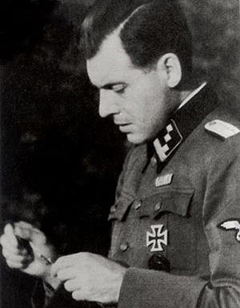
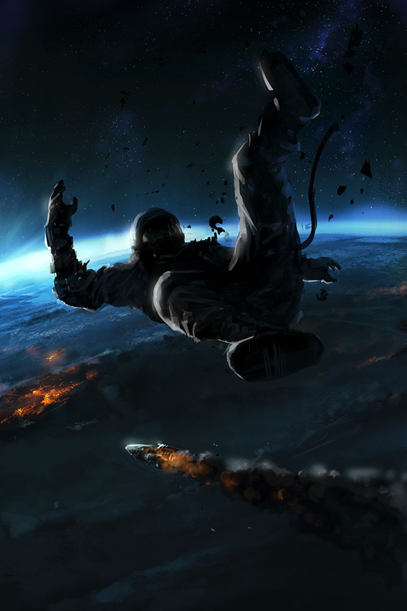
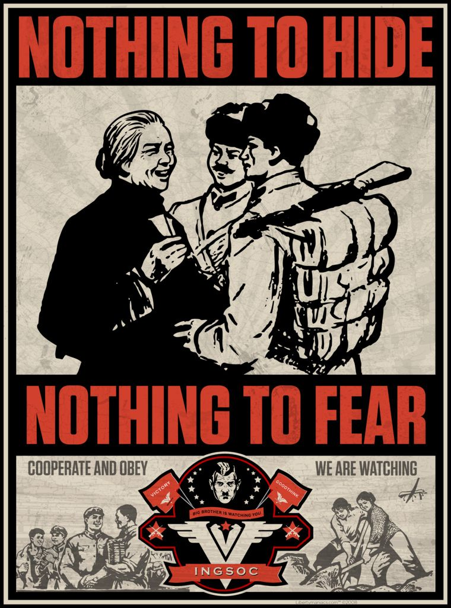

Original Music Composition
 Josef Mengele fue un oficial alemán de las Schutzstaffel (SS) y médico durante la Segunda Guerra Mundial. Se le recuerda esencialmente por sus actos en el campo de concentración y exterminio de Auschwitz, donde realizó experimentos mortales con prisioneros, y fue miembro del grupo de médicos que seleccionaba víctimas para ser ejecutadas en las cámaras de gas. Llegó a ser conocido como el Ángel de la Muerte (en alemán Todesengel). Antes de la guerra, Mengele había obtenido doctorados en Antropología y Medicina e iniciado una carrera como investigador. Se afilió al Partido Nazi en 1937 y a las SS en 1938. Al comienzo de la segunda guerra mundial fue asignado como oficial médico de batallón, pero a principios de 1943 se trasladó al servicio de campos de concentración y fue destinado a Auschwitz. Allí tuvo la oportunidad de realizar experimentos genéticos con humanos, muchas veces sobre gemelos, sin tener en cuenta el bienestar y la seguridad de sus víctimas.23 Debido al avance del Ejército Rojo por Polonia, Mengele fue trasladado 280 km al oeste al campo de concentración de Gross-Rosen el 17 de enero de 1945, diez días antes de la llegada de las tropas soviéticas a Auschwitz.
 Son 30 años en el futuro y Robinson han sido elegidos para comenzar una nueva vida en una colonia espacial. En el camino hacia lo que él cree que será un mundo mejor, su nave sufre una brusca desviación que los lleva a un entorno peligroso. Los viajeros perdidos cayeron en un mundo misterioso al que llamaron «el planeta perdido», las historias de cada episodio se volvieron cómicas y hasta delirantes. Los Robinson encontraron aquí extraterrestres viajeros de todo tipo, como unos “seres de luz” provenientes de la quinta dimensión, o una familia idéntica a los Robinson, una copia de ellos, pero de extraterrestres, o delincuentes interplanetarios. Además “el planeta perdido” albergaba su propia reserva de monstruos que atacaban recurrentemente a nuestros viajeros, como los “cíclopes caníbales”, o unas “plantas carnívoras gigantes” (ciclamenes), o el increíblemente absurdo “hombre zanahoria”, entre muchos otros.
 En 1984, Londres está controlada por un gobieno totalitario. El Gran Hermano lo vigila absolutamente todo. La mano ejecutora, la Policía del Pensamiento, controla cada aspecto de la vida de los ciudadanos. Un hombre llamado Winston Smith, trabajador del Ministerio de la Verdad, intentará rebelarse contra el régimen opresor. Muchos analistas detectan paralelismos entre la sociedad actual y el mundo de 1984, sugiriendo que estamos comenzando a vivir en lo que se ha conocido como sociedad orwelliana,1 una sociedad donde se manipula la información y se practica la vigilancia masiva y la represión política y social. Sin embargo, no hay que olvidar que estos elementos ya aparecen en la novela rusa Nosotros (1924) de Zamiatin, en la que se inspiró Orwell, y que se considera la novela fundadora de la novela distópica contemporánea. La novela de 1984 es, sin embargo, mucho más popular y el término «orwelliano» se ha convertido en sinónimo de las sociedades u organizaciones que reproducen actitudes totalitarias y represoras como las representadas en la novela. La novela fue un éxito en términos de ventas y se ha convertido en uno de los más influyentes libros del siglo XX.